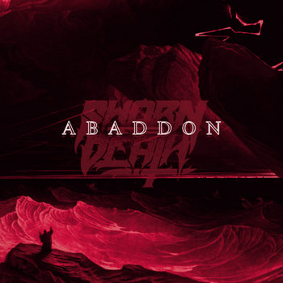

Singl "Abaddon" je live!

Praise the doom That He will bring Ashes scattered When no angels sing
A seal of God On one's chest Protected the ones Who wore it
Or suffer One hundred and Fifty days Of endless torment
Servant of none Hails the One Abaddon Lord's forgotten son
Rise The angel of the bottomless pit Appointed by the Father to Guard the earth
Aligning the fragments That create our days God was afraid of What he had create
Welcome, The Abaddon With the sound Of the seventh trumpet
Rise oh, king Endless eclipse Over pagan sunsets
Servant of none Hails the One Abaddon Lord's forgotten son
Rise The angel of the bottomless pit Appointed by the Father to Guard the earth
Aligning the fragments That create our days God was afraid Of what he had create